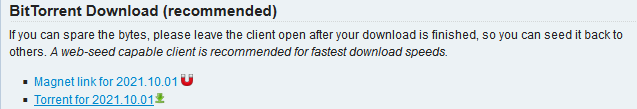

Установка ArchLinux
Введение
Arch Linux это независимый дистрибутив GNU/Linux для опытных пользователей, оптимизированный для архитектуры x86-64, который стремится предоставить последние «новейшие» версии программ, следуя модели rolling release. По умолчанию пользователю предоставляется минималистичная базовая система, в которую пользователь может добавить то, что ему требуется. Для установки, удаления и обновления пакетов используется пакетный менеджер Pacman.
Перед установкой
Для того чтобы установить данный дистрибутив, вам потребуется перейти на данный сайт. И зайти в раздел скачиваний, а после выбрать образ. Скачать его и после сделать загрузочную флешку. После перейти к основной установке. 
Приступим к установке и настройке
1) Базовая часть
# cfdisk
* (создаем два раздела <корень /> и <подкачку swap>)
# mkswap /dev/sdXx
# swapon /dev/sdXx
# mkfs.ext4 /dev/sdXx
# mount /dev/sdXx /mnt
# pacstrap /mnt base base-devel linux-firmware vim
# genfstab -U /mnt >> /mnt/etc/fstab
2) Работа в системе
# arch-chroot /mnt
# vim /etc/locale.gen
* (расскоментировать строку или строки)
# locale-gen
# vim /etc/locale.conf
* (в созданный файл записать : LANG=ru.US.UTF-8)
# pacman -S grub nano networkmanager
# grub-install /dev/sda
# grub-mkconfig -o /boot/grub/grub.cfg
# passwd root
* (устанавливаем пароль для пользователя root)
# useradd -m -g users -G wheel -s /bin/bash имя_пользователя
# exit
# umount -R /mnt
# reboot
3) Настройка
# systemctl enable NetworkManager
# systemctl start NetworkManager
# nmuti
* (подключаемся к сети)
# ping -c 3 archlinux.org
# pacman -S sudo
# nano /etc/sudoers
* (расскоментировать %wheel ALL=(ALL) ALL
# passwd имя_пользователя